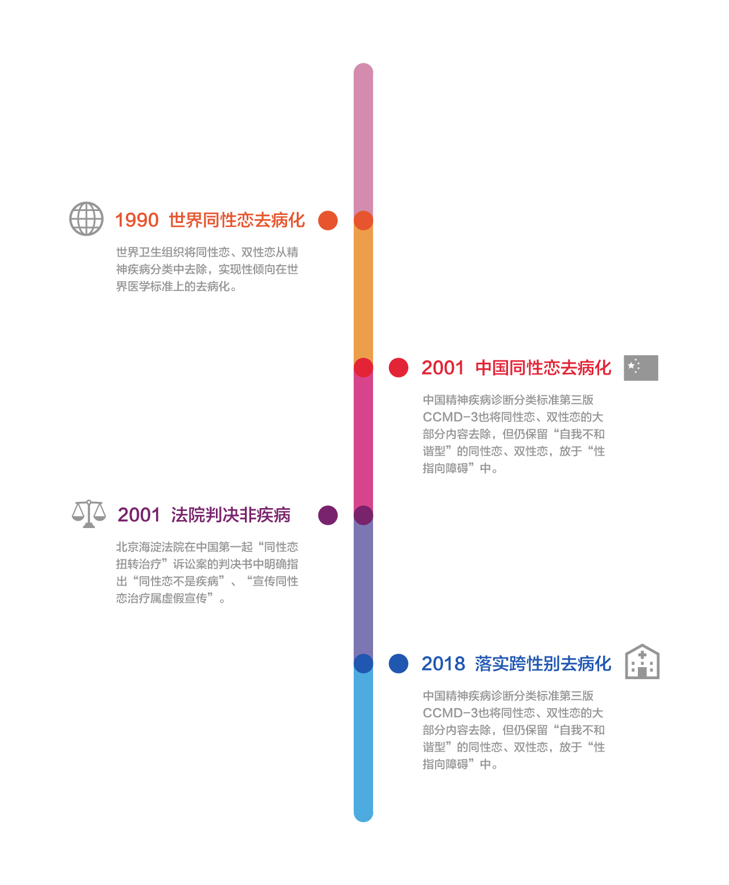
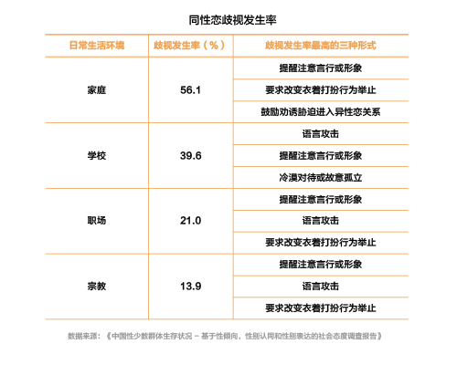

从同性恋去病化30周年谈起：当代中国男同性恋网络生存状况
导语
- 距离同性恋去病化已过去整整30周年，你的身边是否存在这样的声音？
- 同性恋是“不自然”的吗？
- 同性恋是一种“精神疾病”吗？
- 同性恋可以“扭转治疗”吗？
- 。。。
- 在反对同性恋的意见里，这种观点十分常见。
- 可任何改变，都是因为有人勇敢站出来，努力推动而来。
图片来源：纽约 MoMA 现代艺术博物馆
定义疾病的一方 可能正是制造疾病认知的一方

- 1990年5月17日，世界卫生组织将同性恋、双性恋从精神疾病分类中去除，实现性倾向在世界医学标准上的去病化。
- 2001年，中国精神疾病诊断分类标准第三版 CCMD-3也将同性恋、双性恋的大部分内容去除，但仍保留“自我不和谐型”的同性恋、双性恋，放于“性指向障碍”中。
- 2014年12月北京海淀法院在中国第一起“同性恋扭转治疗”诉讼案的判决书中明确指出“同性恋不是疾病”、“宣传同性恋治疗属虚假宣传”。
- 2018年，中国国家卫健委向各级卫生部门发送文件，要求落实使用也将跨性别去病化的最新世界卫生组织的标准 ICD-11。
- 截至2019年1月，经多家同志机构及行动者调查核实，至少有96家公立医院及私人心理诊所仍在开展对于同性恋、双性恋及跨性别人群的“扭转治疗”业务。
- 2020年5月17日，广东省精神卫生中心主任，国际华人心理与援助专业协会会长，及各地心理咨询师、心理健康专业从业者均发来撑同志视频，加入性倾向反歧视的发声。
- 在同性恋去罪化和去病化以后，同性恋在中国的境况依然举步维艰。在同性婚姻合法化在全世界遍地开花的时候，同性恋的话题在中国依然是个禁语。与此同时，社会对同性恋的看法，却不尽相同。由于历史文化传统和宗教信仰的原因，中国社会主流观念对同性恋的态度，并不像某些对同性恋处以极刑的国家一样极端。
23.8W条数据：男同性恋的网络生存真相
- 每年的5月，是同性恋骄傲月，是属于LGBT群体盛大而庄严的庆典。对于这个特殊的群体而言，被嘲笑、被另眼看待似乎是生活常态，但是，世界本就多彩，他们就像彩虹一样，虽不常见，却并不意味着不正确，更不应被否定。
- 随着新媒体和社会的发展，同性恋似乎越来越被大众所接受，但同性恋人群网络生存的真实状况究竟如何？在此背景下，本文采用“requests + BeautifulSoup ”的爬虫框架，于2019年12月14日-2019年12月18日对中国男同性恋社交平台———BF99网站进行网站和用户数据爬取，“中国男同性恋用户最多的社交网站”、“800000余份交友资料”、“遍布数十个国家和地区的用户”、“十余万的页面日访问量”、“238382条数据”...
- 我们希望通过大数据解读少数人群的性与爱，还原当代中国男同性恋群体网络生存的真实状况，走进并倾听性少数群体的故事与心声。
中国到底有多少男士是喜欢男生？
- 23岁的小赵和都市里许多单身年轻人一样，毕业于名牌大学，有一份收入不错的工作，闲暇时经常上网、泡吧。略显不同的是，他是一位同性恋者。
- 中国这个世界上人口最多的国家，虽然目前官方没有关于同性恋发生的数据和一般性取向者的对照数字，但学界估测国内同性恋者约有7000万人。这意味着，我们身边每一百人中就有两到三人或更多的人像小赵一样，愿意选择同性为伴侣。这个庞大的数字背后，是一个不容忽视的群体。
- 据有关调查显示：同性恋者分布于社会的各个层面，不因社会地位高低、地域大小而有所区别，除了性取向不同以外，与一般人群并无差异。而从数据上看，目前全国各省市自治区均有注册BF99网站的男同性恋用户。其中来自广东省的用户最多，共有30804名，而后依次是北京、江苏、浙江、上海、四川、山东和福建等，多为东部沿海地区。来自宁夏、香港、台湾、青海、西藏和澳门的用户相对较少。当然实际的用户数量将高于该数值，通过数据可以领略一二。从下面同性数据分析报告的区域图就可以看出来，在经济越发达、人口越集中、社会包容度越高的地区同性恋人群相对越集中。(分布地图如下，可使用右上角选择区域查看区域内的top20)
asdsafasa
- 某同志app的北京、上海、广州、深圳、成都、重庆、杭州等29个中国主要省会城市中北京市用户最多，其总数约为100440人。不同城市的不同属性用户的分布情况如左图
男同画像：同志亦凡人
- BF99网站的用户小赵说：“父母和身边的朋友早就知道我的情况，他们都很理解我。母亲曾对我说，无论你是个什么样的人，只要做个好人就行。所以这么多年来，我一直很坦然。”虽然不穿奇装异服，说话也没有怪腔怪调，但一些同性恋者还是会被身边细心的人发现。“如果有人问到这个问题，我会坦白地告诉他，我是同性恋。实际上出于尊重的角度，很少会有人直白地问我是不是同性恋，就好像谁也不会突然去问一个人是不是异性恋一样。”
印象·现实：现实生活的网络公开化
- 据了解，许多同性恋者在知道自己的性取向之初，都会感到迷茫、不知所措。但在十几年前网络仍不发达的社会，这种“不对劲”的感觉仅仅是一个停留着同性恋者心中的秘密。而如今，“同性恋”这个原本陌生的词汇越来越多地出现在人们的视野里，一些同性恋者也不介意让别人知道自己的“特殊身份”。在许多大城市，还出现了同性恋者交流的公共场所——比如酒吧和同性恋网站。
- “其实，同性恋者的实际数量并没有大幅度增加，而是他们的生活逐渐从隐秘走向公开，因为人们开始尊重和理解同性恋现象，这使他们敢于表达自己。”黑龙江省疾病控制中心病毒病控制所副所长吴玉华说。
职业：无固定收入的学生群体占比较大
- 一个不可回避的事实是，与普通人相比，同性恋者更容易陷入焦虑和无助。因为尽管外界对同性恋现象给予越来越多的包容，但来自传统社会的种种压力对他们的工作、生存、生活方式还是施加着不可抗拒的影响。而整体上男同用户的职业较为多样，在我国职业分类标准中的8个大类均有所分布。其中以学生为主，其次是其他职业、自由职业者、企业负责人或公司经理等企业工作人员，也有一部分群体为国家机关等政府工作人员。
- 在公开数据中，本科学历的男同用户居多，其次为大专学历和高中/职高学历。关于收入情况，绝大多数用户对此项信息保密，另外一部分群体表示无固定收入。由此可见，对于LGBT群体最受人关注的“出柜”问题，随着年龄和职业稳定性的增加，“出柜”面临的成本与社会压力也会持续增加，而作为青年群体代表的“学生”似乎具有更加稳定的社交欲望和情感需求。
爱情：空巢同志的高单身比例意味着什么？
- 当单身狗自嘲成风，却很少有人考虑同性恋群体，其实单身问题不只是异性恋的困扰，空巢同志的单身比例也很高，并且恋爱维持时间更短。数据显示，男同用户的感情状态不一，主要为单身状态，其次是单一亲密关系和开放式亲密关系，有一小部分用户处于“正在交往约会中”的状态和“同时与几人交往”的感情状态。
- 据张北川教授描述，在中国，约有3000多万名同性恋者已经或打算违背自己的意志，选择与自己并不爱的异性结婚、生子。大多数情况下，他们的配偶对此一无所知。那么，这样的婚姻意味着什么？
婚姻：最难逾越的障碍
- 关于婚姻状态，使用BF99论坛的用户多是未婚的，占比81.26%，其次有一部分用户已经与异性非同志结婚，另外还有小部分是离异的状态和已经与异性同志结婚的状态。整体上看，除了已经结婚的12.61%的用户，多数男同用户表示目前还无结婚打算，其次有22.54%用户表示想和同志爱人结婚，坚决终身不结婚占比11.39%，可能出于外在压力，有小部分男同用户表示会和异性同志或异性非同志结婚。
面对歧视：有XX%的gay曾想跟父母出柜
- 许多同性恋者到了成家立业的年龄不愿提及婚事，成为亲朋好友眼中的“老大难”；有些为避免招惹“麻烦”，干脆草率成婚。很多人畏于世俗的眼光，不敢出柜，因为他们认为一旦出柜，就会将自己逼到阴暗角落，最终无路可走。在非保密信息中可以看到，大部分男同用户进行选择性出柜或完全不出柜。其中“完全不出柜”、“选择性地对少数人出柜”的用户占比较大，少部分人表示“正在计划出柜”、“完全出柜”和“除家人或同事以外已经出柜”。这与社会环境包括婚姻法律、社会对同性恋群体的包容程度等因素有关。
- 2015年初，网易针对移动端用户发起了对同性恋态度的粗浅调查。结果显示，新疆、西藏、宁夏、青海、内蒙古、陕西、甘肃等西北地区省份对同性恋的反对程度最高，其次则是云南、贵州、广西等省份。
- 在西部省份，宗教、民族关系、贫困、乡村文化态度、ICT技术和更广泛的社会经济差异加剧了西藏、新疆等自治区的性少数群体所面临的挑战。调查显示，同性恋在宗教生活中，完全拒绝谈论或承认自己的性取向的人数超过八成。
- 长期致力于同性恋相关研究的卫生部艾滋病咨询专家委员会政策组成员、青岛大学教授张北川深感忧虑：“在4000万左右的男同性恋者当中，约有8成迫于传统和社会的歧视压力，已经或者即将进入婚姻。这个边缘化人群带来的已经是一个不容忽视的社会问题。”
认同而不“出柜”：在包容与尴尬之间生存
- 由联合国开发计划署、北京大学社会学系以及北京同志中心共同发起的《中国性少数群体生存状况-基于性倾向、性别认同及性别表达的社会态度调查报告》表明，上万个性少数群体的调查结果现实：绝大部分LGBTI 人士在生活的方方面面都遭受歧视，尤其是在家庭内部;来自家人的排拒和凌辱是最为根深蒂固的，家庭是排拒和歧视发生最多的地方，学校和工作单位次之。但结合《2015年中国综合社会调查》结果来看，其中大多数受访者对性少数人群并未持负面或刻板态度，青年受访者对于性及性别多元现状的态度更为开放、包容。

- 据中国同性恋调查报告显示，在中国新闻网在2009年-2012年对报道中，以同性恋和犯罪为主题的居多，但2012年之后，婚姻、权益类的问题则占据了主导地位。正面和负面倾向的报道数量不相上下。这意味着中国同性恋人群面临一次重大机遇，教育、立足事实的信息，包括媒体对性的多元现状更加客观真实的报道，将在“同性恋去病化”进程中发挥至关重要的作用。
- 一位32岁的男同性恋者被父母逼着结婚，可他又十分不情愿。他表示：“对于中国的同性恋来说，外界的声音再难听，也比不过家里人的一句‘去医院看看吧’，难道非要我们找一个拉拉结婚才行吗？”尽管中国人对同性恋尽管不像穆斯林国家那样充满敌意，但在许多人心里，同性恋依然是一种亟待矫正的异化思想。在互联网上，人们对同性恋往往有更高的包容度。
- 定义疾病的一方，可能正是制造疾病认知的一方。
- 多元世界，各有态度。不断科普与发声，才是同性恋去病化和保护同志权益的长久之计。